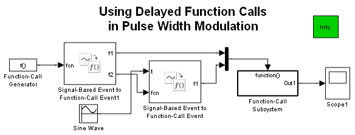
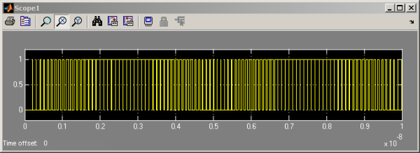

Delayed Function Calls in Pulse Width Modulation
Contents
Overview
This model demonstrates how to create variable-width pulses efficiently.
Structure
In this model, A Function-Call Generator block issues function calls periodically using a fixed frequency. Each function call causes the first Signal-Based Event to Function-Call Event block to issue two function calls, f1 and f2:
- The f1 function call represents the start of a pulse.
- The f2 function call undergoes a delay whose duration is the value of a sine wave. The delayed function call represents the end of the pulse.
The start and end of each pulse execute the Function-Call Subsystem and cause the Repeating Sequence Stair block inside to change its value from 0 to 1 and back. As a result, the plot shows pulses whose widths follow the values of a sine wave. In this model, the sine wave is an example of an offset for the function calls; in your own model, the offsets could result from an algorithm of your choice.
